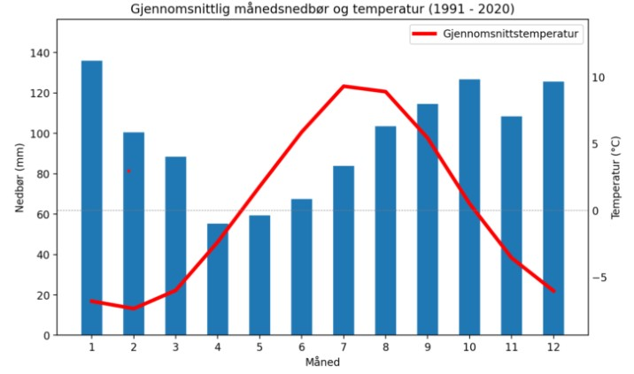

Modul for plotting av klimadata¶
- klimadata.plot.klima_sno_oversikt(df, lokalitet, annotert)¶
Funksjonen lager sampleplot
- Parametere:
df – Dataframe med klimadata
lokalitet – Navn på klimapunktet
annotert – Boolsk verdi som avgjør om det skal lages annotert plot eller ikkje
- Returns
- fig
Plott-objekt med 6 subplot
- klimadata.plot.klimaoversikt(df: DataFrame, lokalitet: str, annotert: bool) Figure¶
Funksjonen lager sampleplot
- Parametere:
df – Dataframe med klimadata
lokalitet – Navn på klimapunktet
annotert – Boolsk verdi som avgjør om det skal lages annotert plot eller ikkje
Returns –
------- –
- fig
Plott-objekt med 4 subplot
- klimadata.plot.normaler_annotert(klima: DataFrame, ax1=None) Axes¶
Tar imot klimadataframe, og returnerer ax plotteobjekt fra matplotlib. Funksjonen plotter normalverdier for nedbør og temperatur for perioden 1991-2020. Kan kombineres i samleplot, eller stå aleine. Finnes ein søsterfunksjon uten tall på plottet.
- Parametere:
klima – Klimadataframe fra klimadata.py
- Returnere:
Plotteobjekt fra matplotlib
- Retur type:
ax1
TODO: Kan samkøyrast med generell normalplot
- klimadata.plot.nysnodjupne_3d(df: DataFrame, ax1=None) Axes¶
Tar inn klimadataframe og returnerer plot for 3 døgns nysnødjupne
Plottet bruker parameteren sdfsw3d - Nynsødybde 3 døgn frå NVE api
Se https://senorge.no/Models for mer informasjon om måten data er generert Det anbefales å sette seg inn i måten datasettet regner om frå mm vann til cm snø.
Plottet tar ut snittverdier for normalperiode 1961-1990 og 1991-2020 samt for heile perioden. Det blir også rekna ut ein trend for heile datasettet.
- Parametere:
df – pandas dataframe med klimadata
- Returnere:
Matplotlib axes objekt med snødjupne plot
- Retur type:
ax1
- klimadata.plot.plot_aarsnedbor(df: DataFrame, ax1=None) Axes¶
Tar inn klimadataframe og returnerer plot for snødjupne Plottet bruker parameteren rr - Døgnnedbør v2.0 - mm frå NVE api Denne returnerer døgnnedbør i mm Se https://senorge.no/Models for mer informasjon om måten data er generert
Plottet tar ut snittverdier for normalperiode 1961-1990 og 1991-2020 samt for heile perioden. Det blir også rekna ut ein trend for heile datasettet.
- Parametere:
df – pandas dataframe med klimadata
- Returnere:
Matplotlib axes objekt med døgnnedbør plot
- Retur type:
ax1
- klimadata.plot.plot_normaler(klima: DataFrame, ax1=None) Axes¶
Tar imot klimadataframe, og returnerer ax plotteobjekt fra matplotlib. Funksjonen plotter normalverdier for nedbør og temperatur for perioden 1991-2020.
Kan kombineres i samleplot, eller stå aleine. Finnes ein søsterfunksjon som skriver ut tall på plottet.
- Parametere:
klima – Klimadataframe fra klimadata.py
- Returnere:
Plotteobjekt fra matplotlib
- Retur type:
ax1
- klimadata.plot.snodjupne(df: DataFrame, ax1=None) Axes¶
Tar inn klimadataframe og returnerer plot for snødjupne
Plottet bruker parameteren sd - Snødybde v2.0.1 frå NVE api. Denne returnerer snødybde i cm.
Se https://senorge.no/Models for meir informasjon om måten data er generert
Plottet tar ut snittverdier for normalperiode 1961-1990 og 1991-2020 samt for heile perioden. Det blir også rekna ut ein trend for heile datasettet.
- Parametere:
df – pandas dataframe med klimadata
- Returnere:
Matplotlib axes objekt med snødjupne plot
- Retur type:
ax1
- klimadata.plot.snomengde(df: DataFrame, ax1=None) Axes¶
Funksjon for å plotte snomengde i løpet av året for normalperiode 1991-2020
Funksjonen filtrerer ut data for normalperiode 1991-2020. Funksjonen glatter ut plottet ved å bruke 7-dagers glidende snitt. Deretter beregnes snitt, max og min verdier for kvar dag i året, og legges til i en ny dataframe.
- Parametere:
df – Klimadataframe
ax1 – Plott-objekt
- Returnere:
ax1 – Plott-objekt med snødager
ax2 – Plott-objekt med temperatur
- klimadata.plot.vind(vind_df: DataFrame) Axes¶
Funksjon for å plotte vind mot nedbør og snø
- Plottet lager 3 subplots:
Vindrose for vindretning uansett nedbør eller ikkje, delt inn i vindstyrker
Vindrose for vindretning med regn, delt inn i mm regn
Vindrose for vindretning med nynsø siste døgn (fsw), delt inn i cm snø
Ved tolking av vindrose må ein både sjå på % antall dager, men også på kva mengde som kjem ved kvar vindretning det kan f.eks være flest dager frå vest, men dagene med virkelig snøfall kan komme fra andre retninger
- Parametere:
vind_df – Dataframe med vinddata fra mars 2018 til mars 2022
- Returnere:
Plott-objekt med 3 subplot
- Retur type:
fig